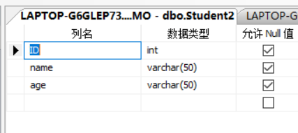
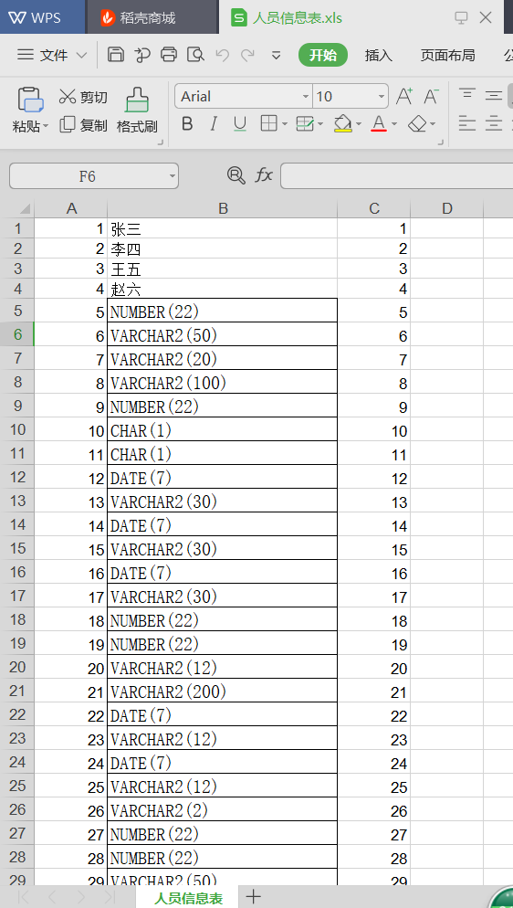
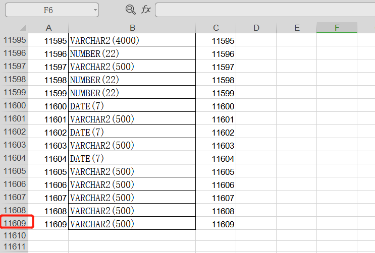
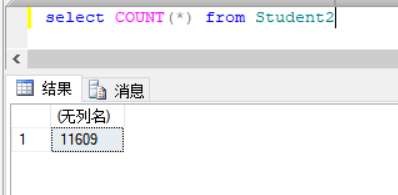
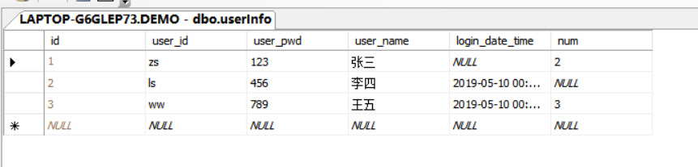
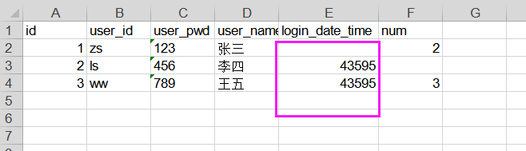

原文出处:本文由博客园博主陈彦斌提供。
原文连接:https://www.cnblogs.com/chenyanbin/p/10832614.html
原文连接:https://www.cnblogs.com/chenyanbin/p/10832614.html
一、Excel理论知识
最新版NPOI2.4.1链接：https://pan.baidu.com/s/1iTgJi2hGsRQHyw2S_4dIUw 提取码：adnq
• 整个Excel表格叫做工作簿：WorkBook
• 工作簿由以下几部分组成
a.页(Sheet);
b.行(Row);
c.单元格(Cell);
二、处理Excel的技术
•OLE Automation：程序启动一个Excel进程，然后和Excel进程进行通讯来运行Excel的操作。
优点：强大，Excel能实现的功能，都可以实现
缺点：必须装Excel
•把Excel当成数据库，使用Microsoft.Jet.OleDb访问Excel，只适合二维结构，功能少，不用装Excel
•OpenXML，微软提供的读写Excel的技术，只能处理xlsx格式文件
•NPOI、MyXls，能够分析Excel文件的格式，能够进行常用Excel操作，不依赖于Excel，节省资源，没有安全性和性能的问题。只能处理xls格式文件、不能处理xlsx这样的新版本Excel文件格式。处理xlsx用OpenXML
1 描述工作簿的类：IWorkbook(接口)、HSSFWorkbook(具体实现类)
2
3 描述工作表的类：ISheet(接口)、HSSFSheet(具体实现类)三、NPOI导出
方式一(默认导出位置)
1 private void button1_Click(object sender, EventArgs e)
2 {
3 List<Person> list = new List<Person>() {
4 new Person(){Name="张三",Age="15",Email="123@qq.com" },
5 new Person(){Name="李四",Age="16",Email="456@qq.com" },
6 new Person(){Name="王五",Age="17",Email="789@qq.com" }
7 };
8 // 引用命名空间
9 // using NPOI.HSSF.UserModel;
10 // using NPOI.SS.UserModel;
11 // using System.IO;
12 //将List集合中的内容导出到Excel中
13 //1、创建工作簿对象
14 IWorkbook wkBook = new HSSFWorkbook();
15 //2、在该工作簿中创建工作表对象
16 ISheet sheet = wkBook.CreateSheet("人员信息"); //Excel工作表的名称
17 //2.1向工作表中插入行与单元格
18 for (int i = 0; i < list.Count; i++)
19 {
20 //在Sheet中插入创建一行
21 IRow row = sheet.CreateRow(i);
22 //在该行中创建单元格
23 //方式一
24 //ICell cell = row.CreateCell(0);
25 //cell.SetCellValue(list[i].Name);
26 //方式二
27 row.CreateCell(0).SetCellValue(list[i].Name); //给单元格设置值：第一个参数(第几个单元格)；第二个参数(给当前单元格赋值)
28 row.CreateCell(1).SetCellValue(list[i].Age);
29 row.CreateCell(2).SetCellValue(list[i].Email);
30 }
31 //3、写入，把内存中的workBook对象写入到磁盘上
32 FileStream fsWrite = File.OpenWrite("Person.xls"); //导出时Excel的文件名
33 wkBook.Write(fsWrite);
34 MessageBox.Show("写入成功！", "提示");
35 fsWrite.Close(); //关闭文件流
36 wkBook.Close(); //关闭工作簿
37 fsWrite.Dispose(); //释放文件流
38 39 }

1 using System;
2 using System.Collections.Generic;
3 using System.Linq;
4 using System.Text;
5 using System.Threading.Tasks;
6
7 namespace _01NPOI的写入
8 {
9 public class Person
10 {
11 public string Name { get; set; }
12 public string Age { get; set; }
13 public string Email { get; set; }
14 }
15 }方式二(更友好的一种方式，用户可以指定导出位置)推荐
1 private void button3_Click(object sender, EventArgs e)
2 {
3 List<Person> list = new List<Person>() {
4 new Person(){Name="张三",Age="15",Email="123@qq.com" },
5 new Person(){Name="李四",Age="16",Email="456@qq.com" },
6 new Person(){Name="王五",Age="17",Email="789@qq.com" }
7 };
8 //创建文件
9 string fileName = "人员信息表";
10 string saveFilePath = ""; //导出时文件的路径
11 SaveFileDialog saveDialog = new SaveFileDialog();
12 saveDialog.DefaultExt = "xls"; //默认文件扩展名
13 saveDialog.Filter = "Excel文件|*.xls"; //文件名筛选字符串
14 saveDialog.FileName = fileName; //导出文件名称
15 saveDialog.ShowDialog(); //显示窗口
16 saveFilePath = saveDialog.FileName; //文件路径
17 // 引用命名空间
18 // using NPOI.HSSF.UserModel;
19 // using NPOI.SS.UserModel;
20 // using System.IO;
21 //将List集合中的内容导出到Excel中
22 //1、创建工作簿对象
23 IWorkbook wkBook = new HSSFWorkbook();
24 //2、在该工作簿中创建工作表对象
25 ISheet sheet = wkBook.CreateSheet("人员信息"); //Excel工作表的名称
26 //2.1向工作表中插入行与单元格
27 for (int i = 0; i < list.Count; i++)
28 {
29 //在Sheet中插入创建一行
30 IRow row = sheet.CreateRow(i);
31 //在该行中创建单元格
32 //方式一
33 //ICell cell = row.CreateCell(0);
34 //cell.SetCellValue(list[i].Name);
35 //方式二
36 row.CreateCell(0).SetCellValue(list[i].Name); //给单元格设置值：第一个参数(第几个单元格)；第二个参数(给当前单元格赋值)
37 row.CreateCell(1).SetCellValue(list[i].Age);
38 row.CreateCell(2).SetCellValue(list[i].Email);
39 }
40 //3、写入，把内存中的workBook对象写入到磁盘上
41 FileStream fsWrite = new FileStream(saveFilePath,FileMode.Create);
42 wkBook.Write(fsWrite);
43 MessageBox.Show("写入成功！", "提示");
44 fsWrite.Close(); //关闭文件流
45 wkBook.Close(); //关闭工作簿
46 fsWrite.Dispose(); //释放文件流
47 } 1 using System;
2 using System.Collections.Generic;
3 using System.Linq;
4 using System.Text;
5 using System.Threading.Tasks;
6
7 namespace _01NPOI的写入
8 {
9 public class Person
10 {
11 public string Name { get; set; }
12 public string Age { get; set; }
13 public string Email { get; set; }
14 }
15 }方式三、导出dataGridView数据
1 public static void ExportExcel(string fileName, DataGridView dgv)
2 {
3 string saveFileName = "";
4 SaveFileDialog saveDialog = new SaveFileDialog();
5 saveDialog.DefaultExt = "xls";
6 saveDialog.Filter = "Excel文件|*.xls";
7 saveDialog.FileName = fileName;
8 saveDialog.ShowDialog();
9 saveFileName = saveDialog.FileName;
10
11 HSSFWorkbook workbook = new HSSFWorkbook();
12 MemoryStream ms = new MemoryStream();
13
14 NPOI.SS.UserModel.ISheet sheet = workbook.CreateSheet("Sheet1");
15
16 int rowCount = dgv.Rows.Count+1;
17 int colCount = dgv.Columns.Count;
18 int r1;
19 NPOI.SS.UserModel.IRow dataRow1 = sheet.CreateRow(0);
20
21 for (int i = 0; i < rowCount; i++)
22 {
23 NPOI.SS.UserModel.IRow dataRow = sheet.CreateRow(i);
24 for (int j = 1; j < colCount; j++)
25 {
26 if (i == 0)
27 {
28 r1 = i;
29 }
30 else
31 {
32 r1 = i - 1;
33 }
34 if (dgv.Columns[j].Visible && dgv.Rows[r1].Cells[j].Value != null)
35 {
36 NPOI.SS.UserModel.ICell cell = dataRow.CreateCell(j-1);
37 if (i == 0)
38 {
39 cell.SetCellValue(dgv.Columns[j].HeaderCell.Value.ToString());
40 continue;
41 }
42 cell.SetCellValue(dgv.Rows[r1].Cells[j].FormattedValue.ToString());
43 }
44 else
45 {
46 NPOI.SS.UserModel.ICell cell = dataRow.CreateCell(j-1);
47 cell.SetCellValue("");
48 }
49 }
50 }
51
52 workbook.Write(ms);
53 FileStream file = new FileStream(saveFileName, FileMode.Create);
54 workbook.Write(file);
55 file.Close();
56 workbook = null;
57 ms.Close();
58 ms.Dispose();
59 }四、NPOI读取Excel内容
1 private void button2_Click(object sender, EventArgs e)
2 {
3 //需要读取的文件:人员表.xls
4 // 创建文件
5 OpenFileDialog ofd = new OpenFileDialog();
6 ofd.Filter = "Excel文件|*.xls";
7 ofd.ShowDialog();
8 string filePath = ofd.FileName;
9 FileStream fsRead=null;
10 IWorkbook wkBook = null;
11 if (filePath != "")
12 {
13 //1、创建一个工作簿workBook对象
14 fsRead = new FileStream(filePath, FileMode.Open);
15 //将人员表.xls中的内容读取到fsRead中
16 wkBook = new HSSFWorkbook(fsRead);
17 //2、遍历wkBook中的每个工作表Sheet
18 for (int i = 0; i < wkBook.NumberOfSheets; i++)
19 {
20 //获取每个工作表对象
21 ISheet sheet = wkBook.GetSheetAt(i);
22 //获取每个工作表的行
23 //foreach遍历 sheet.GetEnumerator
24 for (int r = 0; r < sheet.LastRowNum; r++)
25 {
26 //获取工作表中的每一行
27 IRow currentRow = sheet.GetRow(r);
28 //遍历当前行中的每个单元格
29 for (int c = 0; c < currentRow.LastCellNum; c++)
30 {
31 try
32 {
33 //获取每个单元格
34 ICell cell = currentRow.GetCell(c);
35 if (cell == null) //如果单元格为空时，程序会报错，这里判断提示用户，用try catch防止程序蹦
36 {
37 MessageBox.Show(string.Format("第{0}行,第{1}列单元格为空！",r,c));
38 }
39 CellType cType = cell.CellType; // 获取单元格中的类型
40 MessageBox.Show(cType.ToString());
41 //判断当前单元格的数据类型，可以拓展
42 switch (cType)
43 {
44 case CellType.Numeric: //数字
45 MessageBox.Show("我是数字");
46 break;
47 case CellType.String: //字符串
48 MessageBox.Show("我是字符串");
49 break;
50 case CellType.Boolean:
51 MessageBox.Show("我是布尔值");
52 break;
53 }
54 //获取单元格的值
55 //日期
56 DateTime date = cell.DateCellValue;
57 //数字
58 double num = cell.NumericCellValue;
59 //字符串
60 string str = cell.StringCellValue;
61 //布尔值
62 bool bl = cell.BooleanCellValue;
63 }
64 catch (Exception EX)
65 {
66
67 }
68
69 }
70 }
71 }
72 }
73 else
74 {
75 MessageBox.Show("选择文件失败!","提示");
76 }
77 fsRead.Close();
78 wkBook.Close();
79 fsRead.Dispose();
80
81 }五、数据库中数据，导出Excel
private void button4_Click(object sender, EventArgs e)
{
// 需引用命名空间
// using System.Data.SqlClient;
// using NPOI.HSSF.UserModel;
// using NPOI.SS.UserModel;
// using System.IO;
//1、通过ado.net读取数据
string strSql = "SELECT * FROM Students";
SqlDataReader reader = sqlHelper.ExecuteReader(strSql,CommandType.Text);
if (reader.HasRows) //若有数据
{
//2、将读取到的数据写入到Excel中
//2.1创建工作簿WorkBook对象
IWorkbook wkBook = new HSSFWorkbook();
//2.2创建工作表
ISheet sheet = wkBook.CreateSheet("人员信息表"); //工作表名称
int rIndex = 0;
while (reader.Read())
{
//每读取一条数据，就创建一行row
IRow currentRow = sheet.CreateRow(rIndex);
rIndex++;
int ID = reader.GetInt32(0);
string name = reader.GetString(1);
int age = reader.GetInt32(2);
//向行中创建单元格
currentRow.CreateCell(0).SetCellValue(ID); //第一个参数：单元格索引；第二个参数：给单元格赋值
currentRow.CreateCell(1).SetCellValue(name);
currentRow.CreateCell(2).SetCellValue(age);
}
//创建文件
string fileName = "人员信息表";
string saveFilePath = ""; //导出时文件的路径
SaveFileDialog saveDialog = new SaveFileDialog();
saveDialog.DefaultExt = "xls"; //默认文件扩展名
saveDialog.Filter = "Excel文件|*.xls"; //文件名筛选字符串
saveDialog.FileName = fileName; //导出文件名称
saveDialog.ShowDialog(); //显示窗口
saveFilePath = saveDialog.FileName; //文件路径
//将workBook对象写入到磁盘上
FileStream fsWrite = new FileStream(saveFilePath, FileMode.Create);
wkBook.Write(fsWrite);
MessageBox.Show("数据导出成功！", "提示");
fsWrite.Close(); //关闭文件流
wkBook.Close(); //关闭工作簿
fsWrite.Dispose(); //释放文件流
}
else
{
MessageBox.Show("没有数据");
}
//reader.Close();
} 1 public static SqlDataReader ExecuteReader(string strSql, CommandType cmdType, params SqlParameter[] pms)
2 {
3 SqlDataReader sr = null;
4 SqlConnection conn = new SqlConnection(conStr);
5 SqlCommand cmd = new SqlCommand(strSql, conn);
6 cmd.CommandType = cmdType;
7 if (pms != null)
8 {
9 cmd.Parameters.AddRange(pms);
10 }
11 try
12 {
13 if (conn.State == ConnectionState.Closed)
14 {
15 conn.Open();
16 }
17 sr = cmd.ExecuteReader();
18 return sr;
19 }
20 catch (Exception EX)
21 {
22 MessageBox.Show(EX.Message.ToString());
23 }
24 finally
25 {
26 cmd.Dispose();
27 }
28 return sr;
29 }六、Excel数据导入数据库
数据库字段

Excel数据(必须和数据库字段对上)

1 Thread th; //声明公共变量
2 private void button5_Click(object sender, EventArgs e)
3 {
4 //因为要遍历Excel中的数据，我们这里用线程执行
5 // 需引入命名空间
6 //using System.Threading;
7 //using System.Data.SqlClient;
8 //using NPOI.HSSF.UserModel;
9 //using NPOI.SS.UserModel;
10 //using System.IO;
11 //创建文件
12 object filePath = ""; // 文件路径
13 OpenFileDialog ofd = new OpenFileDialog(); //创建文件
14 ofd.Filter = "Excel文件|*.xls";
15 ofd.ShowDialog();
16 filePath = ofd.FileName;
17 th = new Thread(inportData);
18 th.IsBackground = true; //将线程设置为后台进程
19 th.Start(filePath);
20 ofd.Dispose();
21 }
22 private void inportData(object filePath)
23 {
24 // 创建表副本 SELECT TOP 0 * INSERT INTO newTable FROM oldTable
25 //1、从Excel中读取数据
26 if (filePath.ToString() != "")
27 {
28 FileStream fsRead = new FileStream(filePath.ToString(), FileMode.Open);
29 //一、创建工作簿
30 IWorkbook workBook = new HSSFWorkbook(fsRead);
31 string insert_sql = "";
32 string insert_module = "INSERT INTO Student2 (id,name,age) VALUES ({0})";
33 StringBuilder sb = new StringBuilder();
34 for (int i = 0; i < workBook.NumberOfSheets; i++)
35 {
36 //获取工作表
37 ISheet sheet = workBook.GetSheetAt(i);
38 for (int r = 0; r <= sheet.LastRowNum; r++) //遍历当前工作表中的所有行
39 {
40 IRow currentRow = sheet.GetRow(r); //获取每一行
41 for (int c = 0; c < currentRow.LastCellNum; c++) //遍历当前行中的所有列
42 {
43 //获取每个单元格
44 ICell cell = currentRow.GetCell(c);
45 //listCells.Add(cell);
46 sb.Append("'").Append(cell.ToString()).Append("',");
47 }
48 //拼接SQL语句
49 insert_sql += string.Format(insert_module, sb.ToString().Substring(0, sb.ToString().Length - 1)) + ";";
50 sb.Clear();
51 //listCells.Clear();
52 }
53 }
54 //2、把读取到的数据插入到数据库
55 //执行SQL语句
56 int ret = sqlHelper.ExecuteNonQuery(insert_sql, CommandType.Text);
57 if (ret == 1)
58 {
59 MessageBox.Show("导入成功！");
60 }
61 else
62 {
63 MessageBox.Show("导入失败！");
64 }
65 fsRead.Close();
66 fsRead.Dispose();
67 }
68 else
69 {
70 MessageBox.Show("文件打开失败！");
71 }
72 } 1 /// <summary>
2 /// 执行SQL语句
3 /// </summary>
4 /// <param name="strSql">sql语句</param>
5 /// <param name="cmdType">CommandType.Text代表执行的SQL语句、CommandType.StoreProcedure代表执行的是存储过程</param>
6 /// <param name="pms">可变参数数组</param>
7 /// <returns></returns>
8 public static int ExecuteNonQuery(string strSql, CommandType cmdType, params SqlParameter[] pms)
9 {
10 SqlConnection conn = new SqlConnection(conStr);
11 SqlCommand cmd = new SqlCommand(strSql, conn);
12 cmd.CommandType = cmdType;
13 if (pms != null)
14 {
15 cmd.Parameters.AddRange(pms);
16 }
17 conn.Open();
18 SqlTransaction trans = conn.BeginTransaction();
19 try
20 {
21 cmd.Transaction = trans;
22 int count = cmd.ExecuteNonQuery();
23 if (count > 0)
24 {
25 trans.Commit(); //提交事务
26 return 1;
27 }
28 else
29 {
30 trans.Rollback(); //回滚事务
31 return -1;
32 }
33 }
34 catch (Exception EX)
35 {
36 trans.Rollback(); //回滚事务
37 MessageBox.Show(EX.Message.ToString());
38 return -1;
39 }
40 finally
41 {
42 conn.Close();
43 conn.Dispose();
44 cmd.Dispose();
45 }
46 }导入成功！！！


七、设置单元样式
1 ICellStyle style = workbook.CreateCellStyle();//创建样式对象
2 IFont font = workbook.CreateFont(); //创建一个字体样式对象
3 font.FontName = "方正舒体"; //和excel里面的字体对应
4 font.Color = new HSSFColor.PINK().GetIndex();//颜色参考NPOI的颜色对照表(替换掉PINK())
5 font.IsItalic = true; //斜体
6 font.FontHeightInPoints = 16;//字体大小
7 font.Boldweight = short.MaxValue;//字体加粗
8 style.SetFont(font); //将字体样式赋给样式对象
9 cell.CellStyle = style; //把样式赋给单元格1 ICellStyle style=workbook.CreateCellStyle();
2 style.FillForegroundColor = 14; //具体数字代表的颜色看NPOI颜色对照表
3 style.FillPattern = FillPatternType.SOLID_FOREGROUND;1 行高:row.Height = 30 * 20; //行高为30
2
3 列宽:sheet.SetColumnWidth(3, 13 * 256) //第4列的列宽为131 单元格合并后，样式以左上角的单元格为准
2
3 //CellRangeAddress四个参数为：起始行，结束行，起始列，结束列
4
5 sheet.AddMergedRegion(new CellRangeAddress(0, 0, 0, 10));1 style.Alignment = HorizontalAlignment.CENTER;1 不需要写“=”号
2
3 cell.CellFormula = "公式";1 //上下左右
2
3 styleFont.BorderTop = NPOI.SS.UserModel.BorderStyle.THIN;
4 styleFont.BorderBottom = NPOI.SS.UserModel.BorderStyle.THIN;
5 styleFont.BorderLeft = NPOI.SS.UserModel.BorderStyle.THIN;
6 styleFont.BorderRight = NPOI.SS.UserModel.BorderStyle.THICK;-----------------------以下异常处理-----------------------
一、数据库中数据类型不同、为空时处理
数据库数据

导出处理
1 private void button1_Click(object sender, EventArgs e)
2 {
3 //1、通过ADO.NET读取数据
4 string strSql = "SELECT * FROM userInfo";
5 SqlDataReader reader = sqlHelper.ExecuteReader(strSql,CommandType.Text);
6 if (reader.HasRows)
7 {
8 //------创建文件开始------
9 string filePath = ""; //要导出的文件路径
10 SaveFileDialog saveFile = new SaveFileDialog();
11 saveFile.Filter = "Excel文件|*.xls";
12 saveFile.DefaultExt = "xls";
13 saveFile.FileName = "人员表";
14 DialogResult dResult= saveFile.ShowDialog(); //获取用户点击的按钮 保存/取消
15 filePath = saveFile.FileName; //获取导出路径
16 //------创建文件结果------
17 if (dResult == DialogResult.Cancel) //用户点击的按钮
18 {
19 MessageBox.Show("取消导出！");
20 return;
21 }
22 //创建工作簿
23 IWorkbook workBook = new HSSFWorkbook();
24 //创建工作表
25 ISheet sheet = workBook.CreateSheet("人员表"); // 设置工作表名称
26 #region 创建第一行，设置列名
27 //------------------------------------------------------------
28 //创建第一行，第一行表示列名
29 //循环查询出每一列
30 IRow rowHead = sheet.CreateRow(0);
31 for (int col = 0; col < reader.FieldCount; col++)
32 {
33 rowHead.CreateCell(col).SetCellValue(reader.GetName(col)); //获取当前列的名字:reader.GetName(col)
34 }
35 //------------------------------------------------------------
36 #endregion
37 int rIndex = 1; //为什么行的索引为1呢，因为没有列名
38 while (reader.Read())
39 {
40 IRow currentRow = sheet.CreateRow(rIndex); //创建行
41 int id = reader.GetInt32(0);
42 string user_id = reader.GetString(1);
43 string user_pwd = reader.GetString(2);
44 string user_name = reader.GetString(3);
45 DateTime? dTime = reader.IsDBNull(4) ? null : (DateTime?)reader.GetDateTime(4); //声明时加"?"：可空类型
46 int? num = reader.IsDBNull(5) ? null : (int?)reader.GetInt32(5);
47 currentRow.CreateCell(0).SetCellValue(id);
48 currentRow.CreateCell(1).SetCellValue(user_id);
49 currentRow.CreateCell(2).SetCellValue(user_pwd);
50 currentRow.CreateCell(3).SetCellValue(user_name);
51 //若嫌麻烦的童鞋，此处可以用for循环获取值，然后用switch分别判断单元格的类型,为了方便让大家理解，这里不用for循环遍历
52 //for (int i = 0; i < reader.FieldCount; i++)
53 //{
54 // string ret = reader.GetDataTypeName(i); // 获取读取到列的数据类型
55 // switch (ret)
56 // {
57 // case "string":
58 // break;
59 // case "int":
60 // break;
61 // }
62 //}
63 if (dTime == null)
64 {
65 //若果为NULL值，向Excel写入一个单元格，类型为Blank
66 currentRow.CreateCell(4).SetCellType(CellType.Blank);
67 }
68 else
69 {
70 currentRow.CreateCell(4).SetCellValue((DateTime)dTime);
71 }
72 if (num==null)
73 {
74 currentRow.CreateCell(5).SetCellType(CellType.Blank);
75 }
76 else
77 {
78 currentRow.CreateCell(5).SetCellValue((int)num);
79 }
80 rIndex++;
81 }
82 //写入Excel
83 FileStream fsRead = new FileStream(filePath, FileMode.OpenOrCreate);
84 workBook.Write(fsRead);
85 MessageBox.Show("导出成功");
86 }
87 else
88 {
89 MessageBox.Show("没有数据");
90 }
91 //2、写入Excel
92 }二、数据库列为日期类型，导出时
注：通过NPOI导出DateTime类型时，如果不转换为string，则需要设置一下单元格的格式

处理方法:
1 #region 创建单元格
2 ICell cellLockDate = currentRow.CreateCell(4);
3 //赋值
4 cellLockDate.SetCellValue((DateTime)dTime);
5 #endregion
6 #region 设置样式
7 HSSFCellStyle cellstyle = (HSSFCellStyle)workBook.CreateCellStyle();
8 HSSFDataFormat format = (HSSFDataFormat)workBook.CreateDataFormat();
9 cellstyle.DataFormat = format.GetFormat("yyyy-mm-dd");
10 //赋值给单元格
11 cellLockDate.CellStyle = cellstyle;
12 #endregion 1 第一种：日期格式
2
3 cell.setCellValue(new Date(2008,5,5));
4 //set date format
5 HSSFCellStyle cellStyle = demoWorkBook.createCellStyle();
6 HSSFDataFormat format= demoWorkBook.createDataFormat();
7 cellStyle.setDataFormat(format.getFormat("yyyy年m月d日"));
8 cell.setCellStyle(cellStyle);
9
10 第二种：保留两位小数格式
11 cell.setCellValue(1.2);
12 HSSFCellStyle cellStyle = demoWorkBook.createCellStyle();
13 cellStyle.setDataFormat(HSSFDataFormat.getBuiltinFormat("0.00"));
14 cell.setCellStyle(cellStyle);
15
16 这里与上面有所不同，用的是HSSFDataFormat.getBuiltinFormat()方法，之所以用这个，是因为0.00是Excel内嵌的格式，完整的Excel内嵌格式列表大家可以看这个窗口中的自定义列表：
17
18 HSSFDataFormat format = (HSSFDataFormat)workbook.CreateDataFormat();
19 style7.DataFormat = format.GetFormat("#,##0.00");//千分位，保留两位小数
20 这里就不一一列出了
21
22 第三种：货币格式
23
24 cell.setCellValue(20000);
25 HSSFCellStyle cellStyle = demoWorkBook.createCellStyle();
26 HSSFDataFormat format= demoWorkBook.createDataFormat();
27 cellStyle.setDataFormat(format.getFormat("¥#,##0"));
28 cell.setCellStyle(cellStyle);
29
30 第四种：百分比格式
31
32 cell.setCellValue(20);
33 HSSFCellStyle cellStyle = demoWorkBook.createCellStyle();
34 cellStyle.setDataFormat(HSSFDataFormat.getBuiltinFormat("0.00%"));
35 cell.setCellStyle(cellStyle);
36 此种情况跟第二种一样
37
38 第五种：中文大写格式
39
40 cell.setCellValue(20000);
41 HSSFCellStyle cellStyle = demoWorkBook.createCellStyle();
42 HSSFDataFormat format= demoWorkBook.createDataFormat();
43 cellStyle.setDataFormat(format.getFormat("[DbNum2][$-804]0"));
44 cell.setCellStyle(cellStyle);
45
46 第六种：科学计数法格式
47
48 cell.setCellValue(20000);
49 HSSFCellStyle cellStyle = demoWorkBook.createCellStyle();
50 cellStyle.setDataFormat( HSSFDataFormat.getBuiltinFormat("0.00E+00"));
51 cell.setCellStyle(cellStyle);
52 ---------------------
53 作者：liangyaomu
54 来源：CSDN
55 原文：https://blog.csdn.net/liangyaomu/article/details/52871994
56 版权声明：本文为博主原创文章，转载请附上博文链接！
三、Excel导入数据库处理
本示例没有用线程，建议用线程操作
1 private void button2_Click(object sender, EventArgs e)
2 {
3 String filePath = "";
4 OpenFileDialog ofd = new OpenFileDialog();
5 ofd.Filter = "Excel文件|*.xls";
6 DialogResult ret = ofd.ShowDialog();
7 if (DialogResult.OK == ret)
8 {
9 filePath = ofd.FileName;
10 FileStream fsRead = new FileStream(filePath,FileMode.Open);
11 //创建工作簿
12 IWorkbook workBook = new HSSFWorkbook(fsRead);
13 string insert_module = "INSERT INTO Students VALUES ({0})";
14 string insert_sql = "";
15 StringBuilder sb = new StringBuilder();
16 for (int w = 0; w < workBook.NumberOfSheets; w++)
17 {
18 //获取工作簿中的每个工作表
19 ISheet sheet = workBook.GetSheetAt(w);
20 //遍历当前工作表中的行
21 for (int r = 0; r <= sheet.LastRowNum; r++)
22 {
23 //获取当前行
24 IRow currentRow = sheet.GetRow(r);
25 if (currentRow!=null) //表示该行有对象
26 {
27 //遍历当前行中的单元格
28 for (int c = 0; c < currentRow.LastCellNum; c++)
29 {
30 ICell currentCell = currentRow.GetCell(c);
31 //判断单元格是否为空
32 if (currentCell == null || currentCell.CellType == CellType.Blank || currentCell.ToString().Trim()=="")
33 {
34 //表示空值，需要往数据库中插入空值
35 sb.Append("'',");
36 }
37 else
38 {
39 CellType cType = currentCell.CellType;
40 #region 拼接SQL语句
41 switch (cType)
42 {
43 case CellType.Numeric:
44 if (DateUtil.IsCellDateFormatted(currentCell) == true) //单元格类型为数字，并且为日期类型
45 {
46 sb.Append("'").Append(currentCell.DateCellValue).Append("',");
47 }
48 else //不是日期类型
49 {
50 sb.Append("'").Append(currentCell.NumericCellValue).Append("',");
51 }
52 break;
53 case CellType.String:
54 sb.Append("'").Append(currentCell.StringCellValue).Append("',");
55 break;
56 }
57 #endregion
58 }
59 } //currentRow.LastCellNum
60 insert_sql += string.Format(insert_module, sb.ToString().Substring(0, sb.ToString().Length - 1))+";";
61 sb.Clear();
62 }
63 } //sheet.LastRowNum
64 }
65 int res = sqlHelper.ExecuteNonQuery(insert_sql.Substring(0,insert_sql.Length-1),CommandType.Text);
66 if (res == 1)
67 {
68 MessageBox.Show("导入成功");
69 }
70 else
71 {
72 MessageBox.Show("导入失败");
73 }
74 }
75 else
76 {
77 MessageBox.Show("请选择导入文件!");
78 }
79 } 1 public static int ExecuteNonQuery(string strSql, CommandType cmdType, params SqlParameter[] pms)
2 {
3 SqlConnection conn = new SqlConnection(conStr);
4 SqlCommand cmd = new SqlCommand(strSql, conn);
5 cmd.CommandType = cmdType;
6 if (pms != null)
7 {
8 cmd.Parameters.AddRange(pms);
9 }
10 conn.Open();
11 SqlTransaction trans = conn.BeginTransaction();
12 try
13 {
14 cmd.Transaction = trans;
15 int count = cmd.ExecuteNonQuery();
16 if (count > 0)
17 {
18 trans.Commit(); //提交事务
19 return 1;
20 }
21 else
22 {
23 trans.Rollback(); //回滚事务
24 return -1;
25 }
26 }
27 catch (Exception EX)
28 {
29 trans.Rollback(); //回滚事务
30 MessageBox.Show(EX.Message.ToString());
31 return -1;
32 }
33 finally
34 {
35 conn.Close();
36 conn.Dispose();
37 cmd.Dispose();
38 }
39 }
项目链接：https://pan.baidu.com/s/150J59Z3XP2DroZDy9HYfFA
提取码：nkw1
有不懂的童鞋，欢迎下方留言~~~